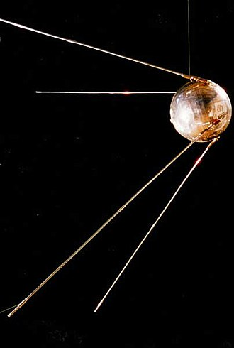

4 октября 1957 года в 22 часа 28 минут по московскому времени с 5-го научно-исследовательского полигона Министерства обороны СССР «Тюра-Там» (будущий космодром Байконур) стартовала ракета-носитель «Спутник», созданная на базе межконтинентальной баллистической ракеты Р-7. Через 295 секунд после старта первый в мире искусственный спутник Земли был выведен на эллиптическую орбиту. На 314-й секунде произошло отделение, и мир услышал легендарное «Бип! Бип!» — сигналы, которые мог принять любой радиолюбитель на планете.

Сам спутник, получивший кодовое обозначение ПС-1 («Простейший Спутник-1»), представлял собой алюминиевую сферу диаметром 58 сантиметров с четырьмя штыревыми антеннами. Его масса составляла всего 83,6 килограмма. Внутри герметичного корпуса размещались серебряно-цинковые аккумуляторы, радиопередатчик, вентилятор и датчики температуры. Несмотря на кажущуюся простоту, за этим «шариком», как ласково называли спутник создатели, стоял колоссальный труд целой плеяды учёных и инженеров. Над его созданием работали Сергей Королёв, Михаил Тихонравов, Мстислав Келдыш и многие другие.
Первый спутник летал 92 суток, совершив 1440 оборотов вокруг Земли и преодолев около 60 миллионов километров. Но главное значение этого события измерялось не километрами. Запуск спутника произвёл эффект разорвавшейся бомбы, особенно в Соединённых Штатах. Американский Пентагон потряс сам факт создания в Советском Союзе многоступенчатой межконтинентальной ракеты, способной доставить груз в любую точку земного шара. Политическая расстановка сил в мире изменилась навсегда.
«В ту ночь, когда Спутник впервые прочертил небо, я глядел вверх и думал о предопределённости будущего. Ведь тот маленький огонёк, стремительно двигающийся от края и до края неба, был будущим всего человечества... Тот огонёк в небе сделал человечество бессмертным. Я благословил русских за их дерзания»
Спутник не только открыл космическую эру, но и стал мощнейшим импульсом для развития науки, техники и международных отношений. 4 октября 1957 года человечество навсегда покинуло свою «колыбель» и сделало первый шаг в бесконечный космос.